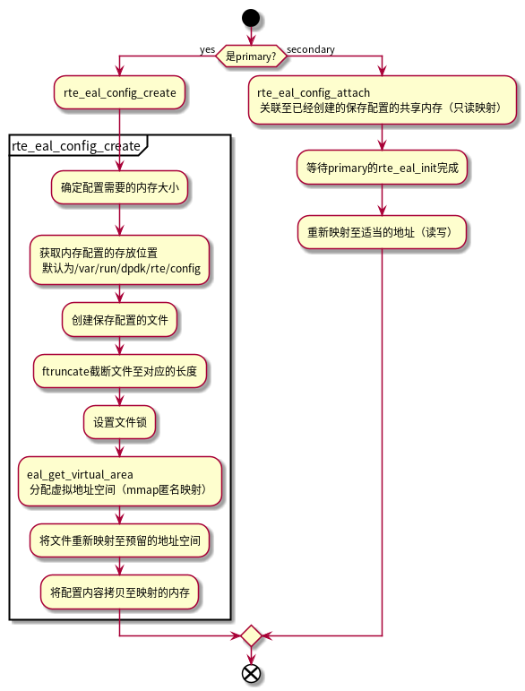
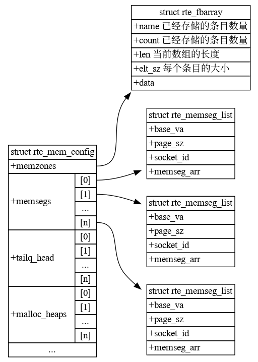
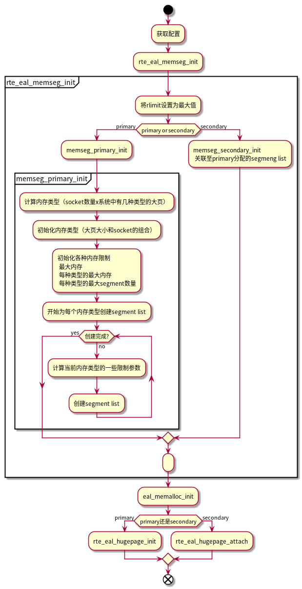
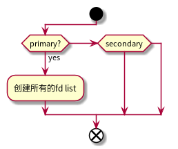

DPDK
Table of Contents
1. 简介
DPDK是数据平面开发套件，它由多个库组成，可加快运行在各种CPU架构上的数据包处理工作。它大量利用了有助于包处理的软硬件特性，如大页、缓存行对齐、线程绑定、预取、NUMA、IA最新指令的利用、Intel DDIO、内存交叉访问等。
核心库Core Libs，提供系统抽象、大页内存、缓存池、定时器及无锁环等基础组件。
PMD库，提供全用户态的驱动，以便通过轮询和线程绑定得到极高的网络吞吐，支持各种本地和虚拟的网卡。
Classify库，支持精确匹配（Exact Match）、最长匹配（LPM）和通配符匹配（ACL），提供常用包处理的查表操作。
QoS库，提供网络服务质量相关组件，如限速（Meter）和调度（Sched）
2. 编译
https://core.dpdk.org/doc/quick-start/
下载dpdk包并解压
$ wget https://fast.dpdk.org/rel/dpdk-20.11.1.tar.xz $ tar xf dpdk.tar.gz $ cd dpdk
编译dpdk库、驱动和测试应用
$ meson build $ ninja -C build
如果想要编译examples中的用例，使用以下命令：
$ meson -Dexamples=all build
保留大页
$ mkdir -p /dev/hugepages $ mountpoint -q /dev/hugepages || mount -t hugetlbfs nodev /dev/hugepages $ echo 64 > /sys/devices/system/node/node0/hugepages/hugepages-2048kB/nr_hugepages
3. 数据结构
**
4. 初始化
4.1. 配置初始化 rte_config_init
配置结构如下：
/** * The global RTE configuration structure. */ struct rte_config { uint32_t main_lcore; /**< Id of the main lcore */ uint32_t lcore_count; /**< Number of available logical cores. */ uint32_t numa_node_count; /**< Number of detected NUMA nodes. */ uint32_t numa_nodes[RTE_MAX_NUMA_NODES]; /**< List of detected NUMA nodes. */ uint32_t service_lcore_count;/**< Number of available service cores. */ enum rte_lcore_role_t lcore_role[RTE_MAX_LCORE]; /**< State of cores. */ /** Primary or secondary configuration */ enum rte_proc_type_t process_type; /** PA or VA mapping mode */ enum rte_iova_mode iova_mode; /** * Pointer to memory configuration, which may be shared across multiple * DPDK instances */ struct rte_mem_config *mem_config; } __rte_packed; /* early configuration structure, when memory config is not mmapped */ static struct rte_mem_config early_mem_config; /* Address of global and public configuration */ static struct rte_config rte_config = { .mem_config = &early_mem_config, };
rte_config_init函数由rte_eal_init调用。 dpdk的配置通过创建文件，将文件用mmap映射并标记为共享，子进程可以通过读取文件描述副，并映射到自身的地址空间，达到共享配置的目的，以下为简要的逻辑说明：

4.2. 内存初始化 rte_eal_memory_init
4.2.1. 内存结构关系

4.2.2. 初始化流程

